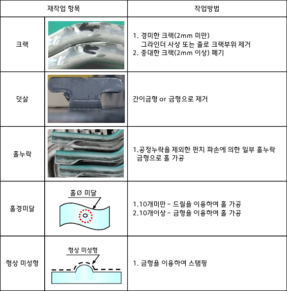
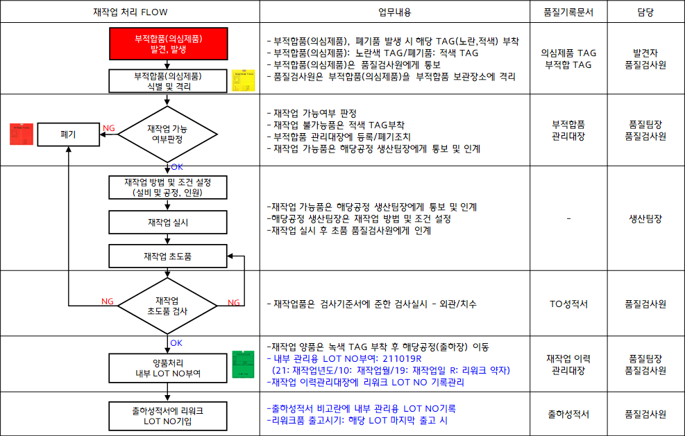
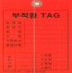
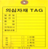
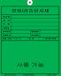

재작업 처리기준 | 결 재 | 작 성 | 검 토 | 승 인 | |
|
1. 목적: 부적합(의심제품) 중 재작업 가능 항목 및 재작업 처리기준 및 LOT식별기준을 정함. 2. 대상: 가공품에 적용. |
내부결재 완료
No | 제·개정일 | 제·개정내용 | 확인 | No | 제·개정일 | 제·개정내용 | 확인 |
0 | 2018.02.28 | 초도작성 | 2 | 2021.10.26 | LOT식별 관리 추가 | ||
1 | 2021.06.10 | 재작업 기록관리 문서 등록 |


재작업 처리 FLOW | 업무내용 | 품질기록문서 | 담당 |
- 부적합품(의심제품), 폐기품 발생 시 해당 TAG(노란,적색) 부착 - 부적합품(의심제품): 노란색 TAG/폐기품: 적색 TAG - 부적합품(의심제품)은 품질검사원에게 통보 - 품질검사원은 부적합품(의심제품)을 부적합품 보관장소에 격리 | 의심제품 TAG 부적합 TAG | 발견자 품질검사원 | |
- 재작업 가능여부 판정 - 재작업 불가능품은 적색 TAG부착 - 부적합품 관리대장에 등록/폐기조치 - 재작업 가능품은 해당공정 제조팀장에게 통보 및 인계 | 부적합품 관리대장 | 품질팀장 품질검사원 | |
- 재작업 가능품은 해당공정 제조팀장에게 통보 및 인계 - 해당공정 제조팀장은 재작업 방법 및 조건 설정 - 재작업 실시 후 초품 품질검사원에게 인계 | - | 제조팀장 | |
- 재작업품은 검사기준서에 준한 검사실시 - 외관/치수 | 검사성적서 | 품질검사원 | |
- 재작업 양품은 녹색 TAG 부착 후 해당공정(출하장) 이동 - 내부 관리용 LOT NO부여: 211019R (21: 재작업연도/10: 재작업월/19: 재작업일 R: 리워크 약자) -재작업 이력관리대장에 리워크 LOT NO 기록관리 | 재작업 이력 관리대장 | 품질팀장 품질검사원 | |
- 출하성적서 비고란에 내부 관리용 LOT NO기록 - 리워크품 출고시기: 해당 LOT 마지막 출고 시 | 출하성적서 | 품질검사원 |
재작업 가능
여부판정
재작업
초도품 검사
부적합품(의심제품)
식별 및 격리
폐기
부적합품(의심제품)
발견, 발생


OK
NG
OK

재작업 방법 및 조건 설정
(설비 및 공정, 인원)
재작업 실시
재작업 초도품
양품처리
내부 LOT NO부여
NG
NG
출하성적서에 리워크
LOT NO기입